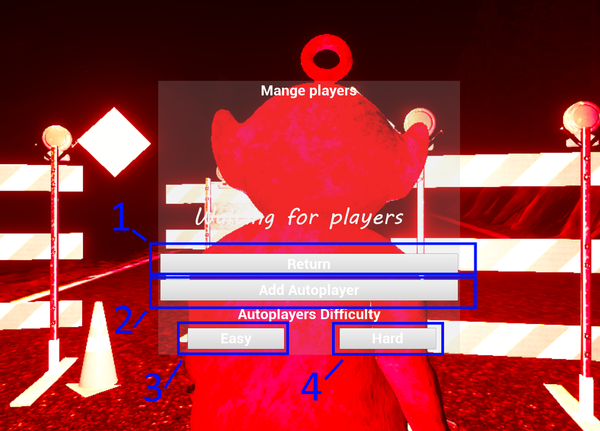
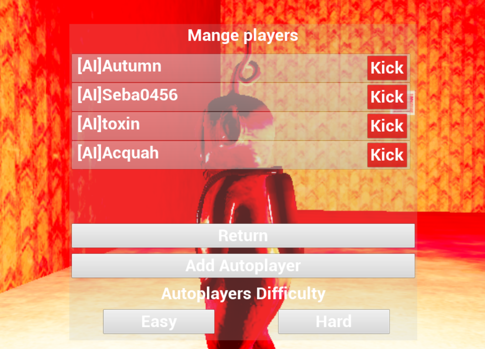

How do I play SlenderTubbies?
This section will show you how to control yourself in SlenderTubbies.
Here's how it's done:
Controls
-
SlenderTubbies uses basic keyboard controls, of which they are listed below.
- WASD - These keys are responsible for player movement.
- Right Mouse Button/Left Shift - These keys are used to sprint.
- Space - Used to jump.
- C - Shows remaining custards.
- Z - Toggles sprint mode.
- I - Toggles in-game UI.
- H - Toggles in-game key bind hints.
- F - Toggles in-game flashlight.
- P/Esc - Opens the in-game pause menu.
- G - Opens the gallery (SP mode only)
- J - Opens the photo mode (SP mode only)
-
Multiplayer
- TAB - Shows all currently connected players.
- M - Opens the Player Management menu.
- T - Opens chat.
Autoplayers
-
SlenderTubbies allows for basic bots to act as players exclusively in the Versus game mode. This is useful for when nobody joins your match or if you can't play online. Here's how to spawn them in and how to remove them.
-
Spawning Autoplayers
In order to spawn an Autoplayer, you have to make sure that you are running a match in the Versus game mode. You also have to be the host!
Pressing the "M" key in-game, you will see this menu.
Here's how the Autoplayer menu works:
- This button closes this menu.
- This button adds a new Autoplayer.
- This button sets A.I. difficulty to easy.
- This button sets A.I. difficulty to hard.
You can spawn a new Autoplayer by pressing the button marked here as 2.
There is no limit as to how many you can spawn, with the maximum amount of bots depending solely on your hardware specs. I recommend playing with 4-6 autoplayers.
Autoplayers have 2 difficulty levels, you can change the difficulty level by pressing the given button marked here as 3 or 4. On the hard difficulty, Autoplayers know maps much better and can see you from greater distances.
-
Despawning Autoplayers
Every Autoplayer or Player has their own row in the Manage Players menu.
Autoplayers have [AI] next to their name so it's not too difficult to determine who's real and who's an A.I. You can kick Players and Autoplayers by pressing the 'Kick' button.
-